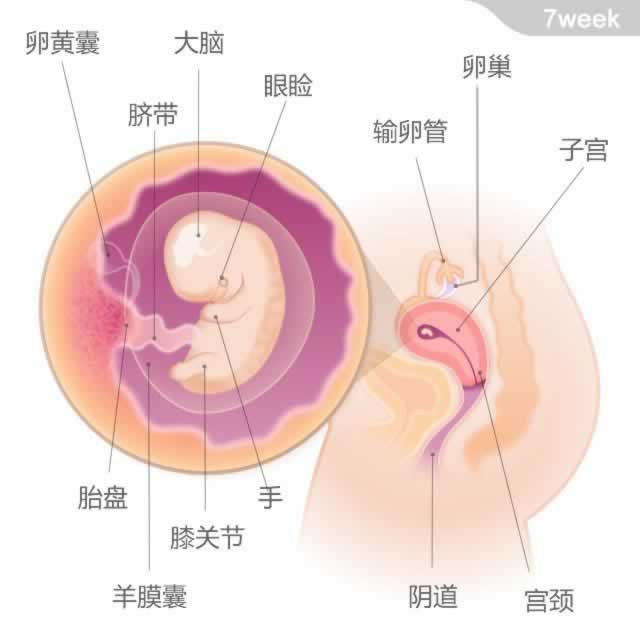
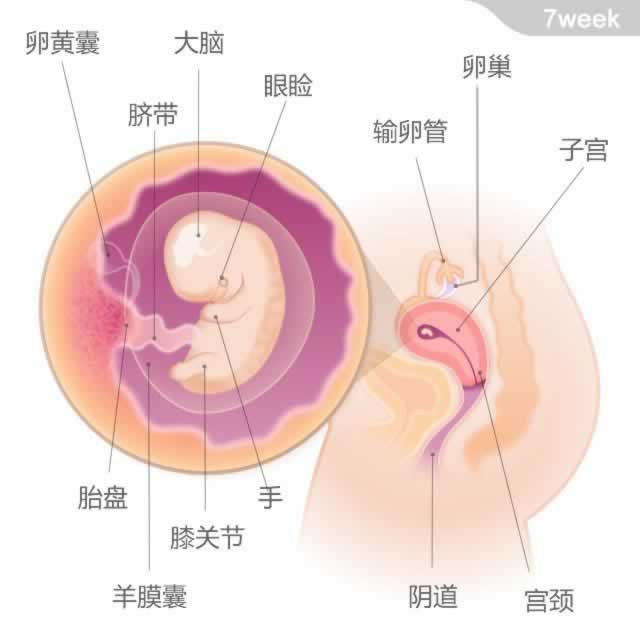

胎宝宝有一颗芸豆大小，从头部到臀部的长度为14~20毫米。
详细内容：
本周，胎宝宝的面部继续发育。他的眼睑快要遮住眼睛了，鼻孔已经形成，牙、颚和味蕾也开始发育了。他的四肢开始变长，膝部和肘部关节渐渐形成，双脚成蹼状。
胎宝宝的重要内脏器官：心、脑、肝、肺和肾等继续迅速发育。心脏的跳动次数渐趋正常。他的肌肉和神经也已经开始发挥作用，此时能看到皮肤下细微的血管。胎宝宝的外生殖器在本周也开始发育了。

胎宝宝有一颗芸豆大小，从头部到臀部的长度为14~20毫米。
胎宝宝的重要内脏器官：心、脑、肝、肺和肾等继续迅速发育。心脏的跳动次数渐趋正常。他的肌肉和神经也已经开始发挥作用，此时能看到皮肤下细微的血管。胎宝宝的外生殖器在本周也开始发育了。